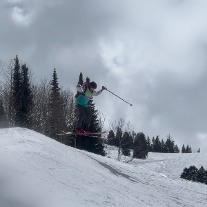

Mason
Flannery
Welcome to my portfolio! I'm Mason, a recent BYU graduate in statistics with an emphasis in data science. I loved my time there and enjoyed getting to learn so much about math, statistics, and machine learning. It has equipped me with the skills to extract valuable insights from raw data, and I'm excited to apply these skills in real-world scenarios. As a dedicated learner, I strive to stay updated on the latest advancements in machine learning and computer science, and I'm currently working towards obtaining IBM's Data Science certification. I'm eager to showcase my data science expertise through the rest of the portfolio!
Table of Contents
Resume
Education and Background
- Brigham Young University—College of Physical and Mathematical Sciences
- Bachelor of Science in Statistics and emphasis in Data Science, Minor in Mathematics
- GPA: 3.59/4.00
- Most relevant courses: Data Science Capstone; Real Analysis; Statistical Theory 1,2; Calculus 1,2,3; Bayesian Analysis; Regression; Experimental Design; Data Structures
- Click here to view my transcrpit
- Certified by IBM for Databases and SQL for Data Science with Python
Relevant Experiences
Research Assistant at Brigham Young University
-
Collaborated with a team of peers to develop an innovative method for curating time-sensitive word count dictionaries, analyzing a substantial dataset of over 130,000 American Presidential Speeches within the framework of the Moral Foundations Theory
- Played a key role in data management and organization, including data cleaning, coding, and storage, facilitating efficient data analysis and retrieval
- Collaborated with team members to write research reports, presentations, and documentation, demonstrating strong written and verbal communication skills and attention to detail
- Applied advanced natural language processing (NLP) techniques, including word embeddings, to extract meaningful insights, patterns, and sentiment analysis from the textual data, providing deeper analysis and understanding
- Gained hands-on experience in utilizing machine learning techniques for data modeling, enhancing predictive capabilities and supporting evidence-based decision-making
- Also collected over 130,000 movie descriptions for further analysis
- Two forthcoming academic articles are expected from this class
IT/Security Intern at Filevine
- Streamlined onboarding processes by coordinating with the HR team resulting in easier experiences for new hires
- Implemented a detailed documentation system to record and track procedures and operations related to onboarding, ensuring accurate and up-to-date information for instruction on methodologies
- Maintained complete and accurate physical inventory records for more than 300 employees, ensuring timely and efficient inventory tracking and management which required acute attention to detail with 0 mistakes
- Contributed to the identification and resolution of IT-related issues, providing technical support and troubleshooting to end-users, ensuring the smooth operation of IT systems and infrastructure
Stat 121 TA at Brigham Young University
- Teachers Assistant for the introductory statistics course at BYU
- Collaborated closely with the professor and other TAs to ensure a cohesive and effective teaching environment, focusing on providing students with a strong foundation in statistical concepts
- Delivered clear instruction to a diverse range of students, including those from non-mathematical backgrounds such as psychology and business, using practical examples to illustrate the real-world application of statistics
- Demonstrated passion for coursework and facilitated learning experiences
Technical Skills
- Proficient in R and Python, utilizing libraries such as Pandas, NumPy, and scikit-learn for data manipulation, statistical modeling, visualization, and machine learning
- Strong understanding of a wide range of statistical modeling techniques, including regression analysis, hypothesis testing, and machine learning techniques, with the ability to effectively evaluate and interpret results
- Experience with Tableau, Microsoft Office Suite (Including Visual Basic macros), HTML, and NLP techniques; SQL (specifically MySQL servers) for data querying and manipulation
Leadership Experiences
Volunteer Representative for The Church of Jesus Christ of Latter-Day Saints
- Learned and became fluent in the Spanish language
- Developed strong interpersonal and communication skills by engaging with diverse individuals from different backgrounds and cultures, including learning Spanish as a second language
- Demonstrated adaptability and resilience while working in challenging and unfamiliar environments
Continuous Learning
I have a genuine passion for learning and consider myself highly teachable. Currently, I'm pursuing IBM's Data Science certification to further expand my knowledge and skills in the field. I actively stay abreast of the latest developments in machine learning and computer science, recognizing the importance of continuous improvement and staying ahead of the curve. 
Personal interests
If it's an activty that's done outside, I'm probably a big fan of it. My primary interests include skiing and hiking. Outside of being outside, I enjoy playing video games (as you'll discover throughout my portfolio) and reading David Foster Wallace novels. Staying active and engaged in various pursuits is a fundamental part of who I am.